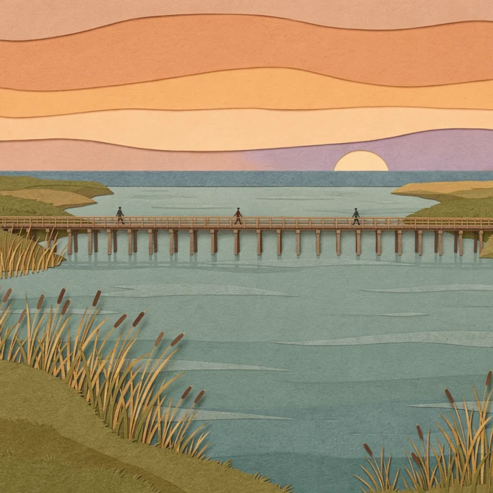
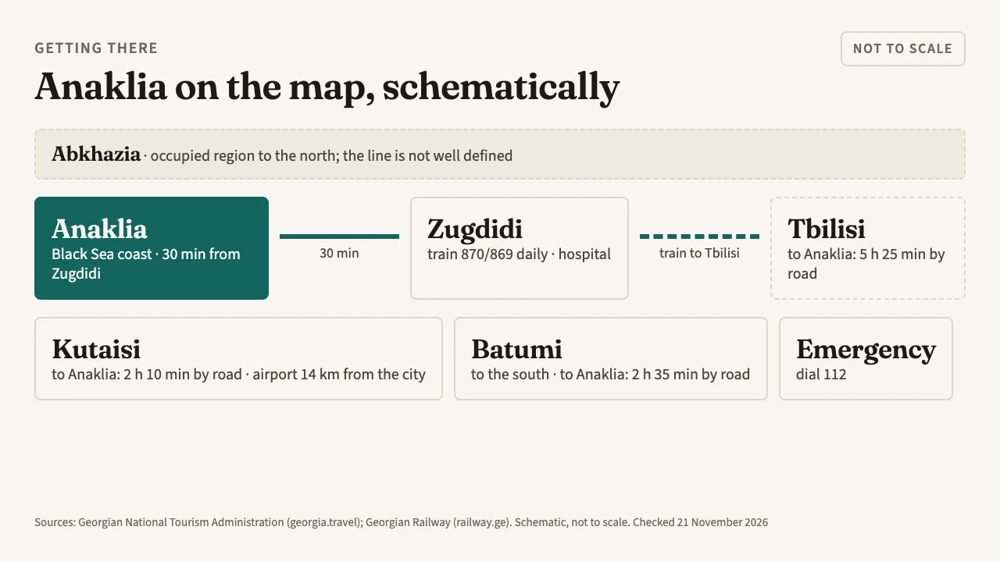

- From Zugdidi
- 30 min by car
- From Kutaisi
- 2 h 10 min by road
- From Tbilisi
- 5 h 25 min by road
- Footbridge, walkable part
- 504 m
- Aquapark built
- 2012
- Emergency number
- 112
This page is part of the Georgia Travel Guide. Checked on 21 November 2026.
Where is Anaklia, Georgia?
It is a village on the western coast of the country. The Georgian National Tourism Administration describes it as "a beachside village on the border with the Autonomous Republic of Apkhazeti".

Zugdidi is about a thirty-minute drive away, the same administration says. Wikipedia calls the place "a town and seaside resort in western Georgia" and places it in the Samegrelo-Zemo Svaneti region, where the Enguri River flows into the Black Sea. By Wikipedia's figure, the regional town is about 30 km away.
Across the river, a long walkway leads to the neighbouring village; more about it below.
Anaklia beach: pebble and fine sand
The shore is mixed. Georgia's tourism administration writes that "there is not only pebble, but also a fine sand beach", and that "the Black Sea is especially clean in this area". That second line is the administration's own assessment, without figures.
The administration's page on beaches says that recently, "Anaklia and Ganmukhuri, on the western shores of Georgia, have become more popular". For sandy shores, that page points to Ureki and Grigoleti.
The big city further south has a shore of stones rather than this mix: see Batumi beach and the sea.

The Anaklia–Ganmukhuri footbridge
A pedestrian walkway crosses the Enguri between the two villages. Its walkable part "is 504 meters long and 6.81 meters wide", and it was designed by the German architect Peter Walser, the tourism administration says. The same page calls it "one of Europe's longest pedestrian bridges".
Unofficial sources disagree on the total length, so we give only the official walkable figure. We also found no official word on whether it is open today.
Our tip. From the walkway and the seafront, do not go down to the riverbank upstream: we found no official map of where the boundary line runs near the river. See official advice near the line.

The water park and the port
A large water park was built nearby in 2012, the tourism administration says. We found no official opening hours, prices or season, so ask locally before you plan a day around it.
Nearby, the government has decided to build the Anaklia deep-sea port; in July 2026 the Ministry of Economy and Sustainable Development said the state will remain the owner of its core infrastructure.
Can you swim in the sea at Anaklia?
Yes: the tourism administration calls it "a resort town", but we found no official swimming season, water temperature or lifeguard schedule for it.

In 2020 the Ministry of Internal Affairs opened a building in the village that "integrates both fire-rescue and water-rescue functions", and said a group of divers would also be based there. On 2026 patrols and warning flags we found nothing official.
Our tip.
- Go into the water only where you can see rescuers on duty.
- Stay out after a storm, and after drinking alcohol.
- Keep children within arm's reach in the water.
- Do not head for the river mouth, or along the shore away from the crowds.
- If someone gets into trouble in the water, call the emergency number.
Anaklia weather and the swimming season
We found no official season dates or water temperatures for the resort, and Georgia's tourism administration describes its climate in two ways. One of its pages calls the climate of this coast "dry and temperate, unlike in Batumi, Sarpi, and Kobuleti", while its weather page calls the climate of Samegrelo "humid subtropical".
That page also gives average temperatures for Samegrelo as a whole, not for the village itself. For the hot months in general, see Georgia in summer: heat, UV and storms. Check the forecast on the day you travel.
Sun and heat on the beach
By the water you burn faster than it feels. The NHS warns: "Water washes sunscreen off, and the cooling effect of the water can make you think you're not getting burned." The NHS adds that water "also reflects ultraviolet (UV) rays", and advises reapplying sunscreen every 2 hours.
Heatstroke is "a medical emergency", the NHS warns. To prevent it, the NHS suggests cold drinks, light-coloured loose clothing and staying out of direct sun between 11am and 3pm; on its sun safety page it gives these hours for the UK. In Georgia, for suspected heatstroke, call 112.
Our tip. There may be no shade by the water: bring your own. Keep children and older relatives in the shade around midday. Put sunscreen on again each time you come out of the water. More on hot days in Staying healthy in the summer heat.

Near the Enguri: the Abkhazia line and official advice
Georgia's tourism administration places Anaklia on the border. Both governments quoted below advise against travel to the occupied region itself. For areas next to the administrative boundary line, the UK government (FCDO) advises against all but essential travel, and the Government of Canada says to avoid all travel within 5 km of it. Neither names Anaklia, the village across the river or the Enguri, and neither says whether the resort is inside those zones, so read both warnings before you go and check how they affect your travel insurance.

The UK government (FCDO). Its travel advice says: "For security reasons, FCDO advises against all travel to the Russian occupied regions of: South Ossetia, Abkhazia". The UK government (FCDO) continues: "FCDO also advises against all but essential travel to areas immediately next to the administrative boundary lines". It cannot give British nationals face-to-face support there. It also warns: "Your travel insurance could be invalidated if you travel against advice from the Foreign, Commonwealth & Development Office (FCDO)." If you plan to hike close to the lines, the UK government's safety advice says to "consider hiring a professional guide".
The Government of Canada. Its travel advice says to "avoid all travel" "within 5 km of the administrative boundary line" with the occupied regions, "excluding Highway E60", "due to crime, military activity, the risk of detention and the presence of landmines". The Government of Canada warns that the lines "are not well defined and change frequently", and that "you could be detained and arrested if you cross into these regions, even by mistake". If you travel to such areas despite its warning, the Government of Canada advises you to "stay on main and paved roads", "avoid walking in fields" and "avoid roadside ditches, shoulders and unmarked trails". Entering Georgia from those regions through an unofficial crossing point can bring "heavy fines and jail sentences", the Government of Canada warns.
Our tip. If you decide to go despite these warnings, keep to the shore, the seafront and paved roads. Do not walk up the Enguri, across fields, along road shoulders or on unmarked paths. Do not go near the line and do not try to cross it. For the rest of the country, see Where not to go: Abkhazia and South Ossetia.
How to get to Anaklia from Tbilisi, Kutaisi and Batumi
By road, the tourism administration gives 5 h 25 min from Tbilisi to Anaklia, 2 h 10 min from Kutaisi and 2 h 35 min from Batumi.

By train. Fast train 870/869 runs daily from Tbilisi to Zugdidi, the Georgian Railway schedule shows. There is no Anaklia station in it. From the end of the line it is about a thirty-minute drive to the coast. Routes and tickets are in Train routes in Georgia: what the Georgian Railway schedule lists.
From the airport. Kutaisi airport lies 14 kilometres from the city, the tourism administration says. From the city, the drive to the coast takes about 2 h 10 min. We found no official time for the airport-to-coast leg. See Arriving at Kutaisi airport.
By marshrutka. We found no official timetable or fares for shared vans to the village. The Government of Canada's travel advice says: "Mini-buses called 'marshrutka' are poorly maintained and often lack security features like seatbelts." More in What official advice says.
Our tip. Agree on the ride back before you go: do not count on finding one late in the day.
By car. The UK government's travel advice asks drivers to "take care when driving, especially at night".
Our tip. Drive there and back in daylight. If you go on into the mountains of Svaneti, read Getting to Mestia first.
Medical help near Anaklia: 112 and Zugdidi
In an emergency, dial 112 and ask for an ambulance; the UK government's health advice puts it in those words. The same advice warns that outside the capital, medical facilities are limited. We found no official first-aid post in the village; the nearest hospital on the tourism administration's list is the one described below.
Calling 112 at Anaklia
One number covers every emergency, and you can speak English. The emergency service says it has been the single emergency number since 2012 and takes calls 24/7 across the whole country, in Georgian, English, Azerbaijani, Armenian, Turkish and Russian. Your phone must be in a mobile operator's coverage area, the service adds.
Our tip. Start with "Anaklia, Samegrelo". Then say exactly where you are: the beach and the nearest entrance or café, the walkway over the river, or the road towards the regional town. More in What to tell the operator.

Where is the nearest hospital?
The nearest one on the tourism administration's list is Zugdidi Referral Hospital, at K. Gamsakhurdia St. №206. The town is about 30 minutes away by car.
The same page says medical establishments "are open 24 hours a day, every day, in every city for emergency medical care"; it does not say how this one receives foreign patients. In an emergency, call the ambulance first.
For other doctors, the catalogue of clinics in Zugdidi on 100doc.ge listed 39 clinics on 21 November 2026.
Your cover. Georgian law requires visitors to hold health and accident cover of at least 30,000 GEL for their whole stay, under Resolution No. 602 of the Government of Georgia of 26 December 2025. More in Insurance to enter Georgia (2026 rule). The UK government advises cover for medical treatment and evacuation.
Frequently asked questions
Can you swim in the Black Sea at Anaklia?
Is Anaklia beach sandy or pebbly?
Is it safe to visit Anaklia near Abkhazia?
When is the swimming season?
We found no official dates. Check the forecast on the day you go.
Are there lifeguards at Anaklia?
How far is Anaklia from Tbilisi?
Sources
- Georgian National Tourism Administration: Anaklia ↑
- Georgian National Tourism Administration: Zugdidi ↑
- GOV.UK travel advice: warnings and insurance (updated 12 November 2026) ↑
- 112 Georgia: languages and service ↑
- Wikipedia: Anaklia ↑
- Georgian National Tourism Administration: The beaches ↑
- Ministry of Economy and Sustainable Development: Anaklia port (6 July 2026) ↑
- Ministry of Internal Affairs: new fire-rescue building in Anaklia (28 October 2020) ↑
- Georgian National Tourism Administration: Weather and seasons ↑
- NHS: Sunscreen and sun safety (reviewed 24 March 2026) ↑
- NHS: Heat exhaustion and heatstroke (reviewed 28 May 2026) ↑
- Government of Canada: travel advice for Georgia (last updated 27 August 2026) ↑
- GOV.UK travel advice: safety and security ↑
- Georgian Railway: traffic general schedule ↑
- Georgian National Tourism Administration: public airports ↑
- GOV.UK travel advice: health ↑
- Georgian National Tourism Administration: medical information ↑
- Legislative Herald of Georgia: Resolution No. 602 (Georgian) ↑
This guide is general information, not medical advice: the doctor decides on your care.